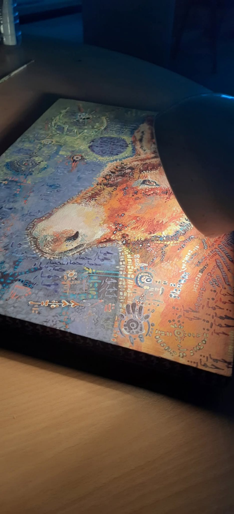

Monsieur l’Âne et l’Âme perdue
(un conte philosophique)
I. Le soir des chaises vides
Sous un grand chêne, au bout d’un sentier qu’on oublie souvent,
Monsieur l’Âne tient conseil avec personne.
Les chaises l’entourent, vides, tournées vers un feu mort.
Le vent brasse les feuilles et les souvenirs.
Il attend quelqu’un.
Ou peut-être rien.
Car Monsieur l’Âne n’a pas d’agenda,
juste un cœur patient et un regard qui voit plus loin que les murs.
Ce soir-là, elle revient.
L’Âme perdue.
Un éclat jaune fissuré, un être d’encre et de lumière,
un corps sans chair qui flotte entre deux souffles.
— “Tu m’as appelée ?” murmure-t-elle.
— “Non,” dit l’Âne, “mais je savais que tu viendrais.”
Autour d’eux, les symboles bruissent,
des dessins s’allument dans l’air,
comme si la pensée du monde se mettait à parler.
L’Âme cherche ses mots, mais ne trouve que du bruit.
Son cœur est un trou noir peint en plein milieu,
un gouffre où tout sens s’effondre.
Elle voudrait comprendre,
mais plus elle cherche, plus la confusion s’épaissit.
Alors Monsieur l’Âne souffle doucement :
— “Assieds-toi. Le feu ne brûle plus, mais il chauffe encore.”
Elle s’assoit.
Et pour la première fois, le silence ne fait pas peur.
Là, au milieu des chaises vides et des branches basses,
le monde s’apaise.
L’Âme ne trouve pas sa route,
mais elle trouve sa place.
Et Monsieur l’Âne, sans rien dire, sourit.
II. Le matin d’après
L’aube glisse sur les feuilles,
froide et dorée à la fois.
Les chaises sont toujours là,
éparpillées comme des pensées au réveil.
Monsieur l’Âne s’étire lentement.
La rosée lui colle au dos,
et son souffle fait des nuages dans l’air clair.
L’Âme perdue n’a pas dormi.
Elle est restée là, immobile,
à regarder la nuit s’éteindre morceau par morceau.
Son cœur — ce petit trou noir —
bat plus doucement aujourd’hui.
— “Tu n’as pas fermé l’œil,” dit l’Âne.
— “J’avais peur de disparaître,” répond-elle.
— “On disparaît quand on s’oublie, pas quand on se repose.”
L’Âme sourit — un sourire fragile, presque humain.
Autour d’elle, les symboles changent :
des lignes se font rivières,
des spirales deviennent chemins.
Le monde reprend sens,
non pas parce qu’elle l’a compris,
mais parce qu’elle a cessé de le fuir.
Alors l’Âne se lève, secoue ses oreilles,
et d’un ton tranquille déclare :
— “Viens. On va marcher un peu. Le jour a besoin de pas pour se lever.”
Ils s’éloignent lentement,
leurs ombres se mêlant à la lumière neuve.
Derrière eux, les chaises brillent un instant,
comme si elles savaient que quelque chose venait de se réparer.
Et dans l’air, à peine perceptible,
une phrase reste suspendue :
"Il suffit parfois d’un silence partagé
pour que l’âme retrouve son corps."
III. Le feu reprend
Le soir tombe, lentement,
comme une couverture sur le monde.
Le vent s’est tu,
et la clairière respire, apaisée.
Monsieur l’Âne est revenu le premier.
Il a ramassé des branches,
quelques feuilles sèches,
et a soufflé sur les cendres d’hier.
Une flamme, timide, s’est levée.
Pas grande, pas fière — juste vivante.
L’Âme perdue arrive sans bruit.
Ses pas ne laissent plus de trace.
Son cœur noir s’est fendu d’une ligne claire,
comme si une étoile s’y était glissée.
Elle s’assoit près du feu.
Les chaises, fidèles, les encerclent à nouveau,
prêtes à écouter sans comprendre.
— “Tu vois,” dit l’Âne,
“rien ne brûle éternellement,
mais tout peut reprendre s’il reste un peu de braise.”
L’Âme hoche la tête.
Ses yeux reflètent les flammes,
et dans son regard, on devine
quelque chose d’humain revenu de loin.
Les symboles autour d’elle se taisent enfin.
Plus de spirales, plus de chaos.
Juste le silence, doux,
et la chaleur du feu sur la peau du soir.
Alors, l’Âme demande :
— “Et maintenant ?”
Monsieur l’Âne répond :
— “Maintenant, tu vis. Et moi, je veille.”
Le feu crépite,
les étoiles s’allument une à une,
et le monde, pour un instant,
semble comprendre son propre langage.
Djamel Metref
At Yenni le 10 novembre 2025
Tableaux © Khiro Djebara
"Monsieur l'âne", "L'âme perdue"

← Tous les poèmes